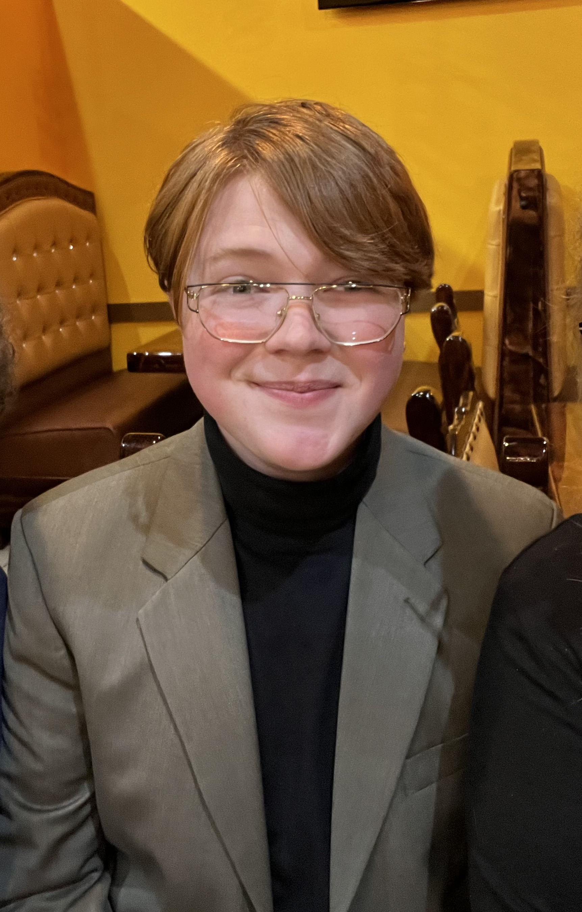

Jul 2026 — Present
Software Developer
Enterprise Application Services · Tennessee Tech
Work on systems and tickets that hit users at campus scale — the kind of load where a small miss becomes everyone’s problem.
Forward deployed engineering
I sit with operators and small businesses, name the real problem, and ship the system.
Business Information Technology at Tennessee Tech, graduating May 2028. Software developer at campus Enterprise Application Services. Co-founder at Heartwood Logic.
Selected work
01
Custom software for small and mid-size businesses in the southeast. First customer: TenGigAndBeyond — a catalog without payment transactions, and a lead-ranking service on their hardware. Internally, that ranking cut client-review time by 80% before we sold it.
Read the case →02
A client had been through other vendors and still did not have a tool their people could use. I stepped into the management role, kept the dashboard, killed the PWA, and put a mobile app on TestFlight in eight days.
Read the case →03
When I started, the student SOC did not know if they would have a SIEM. I did not wait. I built Aerial Eye after hours — ClickHouse ingestion, a heatmap, downtime-cost analysis, local AI. They now run it alongside another SIEM.
Read the case →Experience
Jul 2026 — Present
Enterprise Application Services · Tennessee Tech
Work on systems and tickets that hit users at campus scale — the kind of load where a small miss becomes everyone’s problem.
2026 — Present
Heartwood Logic LLC
Sell, shape, and build custom software for southeast SMBs. Own sales, marketing, business strategy, and full-stack development. Co-founder covers networking, sysadmin, and infrastructure. First customer is live.
Jun 2026 — Jul 2026
CGI · Chattanooga
Built internal tooling on a team of ten for users across the southeast. Client systems stay off this page.
Dec 2024 — Jun 2026
iCube · Tennessee Tech
Shipped Next.js and MongoDB product work for iCube’s first users, then stepped into management on Doable: reviewed the inherited code, cut the PWA, and got a mobile app onto TestFlight in eight days. The app is on Google Play; the App Store listing is in progress.
Dec 2025 — Present
Student SOC · Tennessee Tech
Write and review the Cyber Sentinel, a monthly newsletter on cyber crime activity. Deployed Aerial Eye so the desk had a working SIEM while it was still unclear whether another one would arrive. They now run both.
Feb 2025 — Aug 2025
Your Tour Navigation LLC
Led the Flutter app to TestFlight for 100+ beta testers and helped raise $11,250 in seed funding at Eagle Works. AI-powered tours on Mapbox and OSRM.
Project
Hardware + mobile
ESP32 scans for Bluetooth devices that have been following someone. A mobile app alerts the user. Built to make stalking harder to do quietly — firmware, radio, and the phone in one system.
Mar 2024 — Feb 2025
Coding Minds Academy & iD Tech
Taught more than twenty students in individual sessions across both organizations. Wrote lesson material before class, tailored to the person in the chair. Python, C++, Flutter, and security fundamentals. 4.73/5.0 instructor score at Coding Minds.
Jan 2023 — May 2023
Tennessee Tech
Campus-wide digital signage and desktop deployments. Wiped surplus machines so proprietary data did not leave with the hardware.

About
I’m a Business Information Technology student at Tennessee Tech. That combination is the point: I care as much about the people who have to live with a system as I do about the system itself.
I have sold and shipped software into a small business, walked into an eighteen-month engagement that was still wrong and put a working app in the client’s hands in eight days, and built a SIEM after hours because nobody yet knew if the SOC would get one. I have also taught teenagers to write code, one student at a time.
The through-line is the same. Get in the room. Learn how the work actually happens. Build the smallest thing that changes it. Leave it running where the customer already is.
Contact